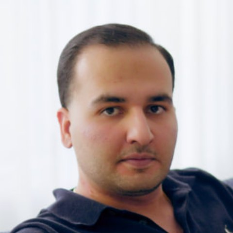

<noscript>
<div style="max-width:760px;margin:0 auto;padding:64px 24px;font-family:system-ui,sans-serif;line-height:1.6;color:#e9e7e1;background:#0c0d10">
<h1>Ahnoud Tech, design &amp; engineering studio in Dubai</h1>
<p>The brand and the build, together. Ahnoud Tech exists on one belief: the brand and the build should never be separated. One studio, from a solid identity and a reasoned design to the software and infrastructure that carry them. Founded in 2024 by Hannan Amiri, part of <a href="https://ahnoud.com">Ahnoud</a>.</p>
<h2>Kinomad Studio</h2>
<p><a href="https://kinomadstudio.com">Kinomad Studio</a>, our in-house team: brand identity, web design, 3D visualization &amp; animation, web development, AI agents &amp; automation, application DevOps.</p>
<h2>Purpose</h2>
<p>To give ambitious companies a brand and the systems behind it, designed and built as one, so what they launch looks right, works right, and keeps running.</p>
<h2>Brand, design, and engineering services</h2>
<ul><li><strong>Brand Identity</strong>: Naming, strategy, logo and identity systems, and brand guidelines.</li><li><strong>Web Design</strong>: Websites and product interfaces, designed for clarity and conversion.</li><li><strong>3D Visualization &amp; Animation</strong>: Product renders, spatial visuals, and motion for launches and campaigns.</li><li><strong>Web Development</strong>: Fast, accessible websites and web apps, built to scale.</li><li><strong>AI Agents &amp; Automation</strong>: Custom AI agents and automated workflows that take repetitive work off your team.</li><li><strong>Application DevOps</strong>: Deployment, cloud infrastructure, monitoring, and care after launch.</li></ul>
<h2>Studio approach</h2>
<ol><li>Identity: naming, voice, and identity systems.</li><li>Design: interfaces, websites, and 3D storytelling.</li><li>Build: web development, AI agents, and automation.</li><li>Operate: DevOps, infrastructure, and care after launch.</li></ol>
<h2>Founder</h2>
<p> Hannan Amiri, Founder, Ahnoud Tech.</p>
<h2>Common questions</h2>
<h3>What does Ahnoud Tech do?</h3>
<p>Ahnoud Tech is a design and engineering studio. We take a company from brand identity and web design through web development, AI agents and automation, to the infrastructure that keeps it running.</p>
<h3>Where is Ahnoud Tech based?</h3>
<p>Our studio is at Building 14, 18 Street - Zaa'beel Second - Za'abeel - Dubai - UAE. We work with clients worldwide, in English and Arabic.</p>
<h3>What is Kinomad Studio?</h3>
<p>Kinomad Studio is our in-house team. It covers brand identity, web design, 3D visualization &amp; animation, web development, AI agents &amp; automation, and application DevOps.</p>
<h3>Can one studio handle both design and development?</h3>
<p>Yes. Design and engineering sit in one team, so a project moves from identity to launch and ongoing operations without changing vendors.</p>
<h3>Do you support a product after launch?</h3>
<p>Yes. Application DevOps covers deployment, infrastructure, and care after launch, so what we ship keeps running.</p>
<h3>How do I start a project?</h3>
<p>Use the Start a project button, email hello@ahnoud.com, or message us on WhatsApp or Telegram at +971 50 483 9038 with your goals, scope, and timing. We reply within two working days.</p>
<h2>Contact</h2>
<p><a href="mailto:hello@ahnoud.com">hello@ahnoud.com</a><br><a href="tel:+971504839038">+971 50 483 9038</a> · <a href="https://wa.me/971504839038">WhatsApp</a> · <a href="https://t.me/+971504839038">Telegram</a><br>Building 14, 18 Street - Zaa'beel Second - Za'abeel - Dubai - UAE<br>Gulf Standard Time, GMT+4</p>
</div>
</noscript>
